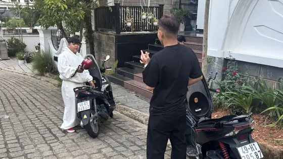

폭포는 오토바이로 가는 게 좋은 이유
달랏의 유명한 폭포는 대부분 시내 남쪽과 남서쪽에 있고, 가는 길에 소나무 숲, 커피 농장, 채소·꽃 비닐하우스가 이어집니다. 직접 운전하면 원하는 곳에서 멈추고, 투어 버스보다 먼저 도착해 하루에 두세 곳을 여유 있게 둘러볼 수 있습니다.
다딴라 폭포(Datanla) — 가장 가까운 곳
다딴라는 시내에서 남쪽으로 약 5–7km, 프렌 고개와 뚜옌럼 호수로 가는 길에 있습니다. 오토바이로 15분 정도라 반나절 일정에도 넣기 쉽습니다. 숲속 계단식 폭포 외에도 레일을 따라 숲을 지나 폭포 아래까지 내려가는 알파인 코스터로 유명해 아이들과 함께 오는 가족에게 인기가 많습니다. 입장권은 입구에서 구매합니다.
프렌 폭포(Prenn) — 고개 아래
같은 도로를 따라 더 내려가 프렌 고개 아래(시내에서 약 10–12km)에 프렌 폭포가 있습니다. 정원과 산책로가 있는 공원 같은 곳이고, 다리를 따라 물줄기 뒤쪽으로도 걸어갈 수 있습니다. 다딴라와 같은 길이라 오전 한나절에 두 곳을 함께 보기 좋습니다.
코끼리 폭포(Thác Voi) — 거칠고 웅장한 폭포
코끼리 폭포는 남반(Nam Ban) 마을 근처, 달랏에서 남서쪽으로 약 25–30km 거리입니다. 보통 따눙(Ta Nung) 고갯길을 지나가는데, 언덕과 커피 농장, 꽃밭이 이어져 경치가 훌륭하지만 커브가 많습니다. 폭포는 넓고 소리가 웅장하며 다딴라보다 훨씬 자연 그대로입니다. 내려가는 길이 가파르고 돌계단이 고르지 않으며 늘 젖어 있습니다. 바로 옆 린안 사원(Linh An)에는 큰 불상이 있어 잠시 들러볼 만합니다.
퐁구르 폭포(Pongour) — 가장 넓은 폭포
퐁구르는 시내에서 남서쪽으로 약 45–50km, 리엔크엉 공항을 지나 있습니다. 넓은 바위 계단 여러 층 위로 물이 흘러내리는 모습으로 유명하며, 중부 고원에서 손꼽히는 폭포입니다. 대부분 국도로 가며 편도 약 1–1.5시간 걸립니다. 하루를 온전히 쓸 수 있고 큰 폭포를 보고 싶은 분께 추천합니다.
하루 폭포 투어 코스
- 오전: 7시 30분쯤 출발, 따눙 고개를 넘어 코끼리 폭포와 린안 사원 방문.
- 점심: 퐁구르까지 이동(약 30km), 가는 길에 현지 식당에서 점심.
- 오후: 국도로 달랏 복귀, 여유가 있으면 시내 들어오기 전 프렌이나 다딴라에 들르기.
전체 코스는 약 100–120km입니다. 시간이 없다면 오전에 다딴라 + 프렌만 다녀와도 충분합니다. 더 많은 코스는 오토바이로 가는 달랏 가볼 만한 곳: 5가지 코스에서 확인하세요.
언제 가면 좋을까
우기(대략 5월~10–11월)에는 수량이 가장 많아 폭포가 웅장하지만, 물이 흙탕물인 경우가 많고 길이 미끄럽습니다. 건기(12월~4월)에는 물이 맑고 길도 말라 있지만 일부 폭포는 수량이 줄어듭니다. 지금 10월은 수량이 가장 풍부한 시기이니 오전에 다녀오세요. 오후에는 소나기가 자주 내립니다.
안전 수칙
- 슬리퍼 말고 접지력 좋은 신발을 신으세요. 물가 바위는 언제나 미끄럽습니다.
- 수영하지 말고 안전 펜스를 넘지 마세요. 폭포 아래 물살은 특히 비 온 뒤 매우 셉니다.
- 우비를 시트 아래 넣어 두고, 어두워지기 전에 폭포에서 나오세요.
- 따눙 고개와 프렌 고개에서는 커브 전에 속도를 줄이고 오른쪽 차선을 지키세요.
- 장거리에는 Honda Air Blade 125cc가 가장 편하며, 시내를 떠나기 전 기름을 확인하세요.
- 음주 운전은 절대 금지, 베트남 교통법규를 철저히 지켜 주세요.

폭포 여행용 오토바이 렌트
저희 모든 오토바이 — Honda Vision 110cc, Honda Air Blade 125cc, 전기 스쿠터 — 는 하루 150,000 VND입니다. 현금 보증금 없이 여권이나 신분증만 맡기시면 되고, 헬멧은 무료, 모든 오토바이에 휴대폰 거치대가 있으며 가솔린 스쿠터는 기름 1리터를 넣어 드립니다. 2일 이상 렌트 시 달랏 시내 호텔까지 무료로 배달해 드립니다. WhatsApp으로 연락 주시면 코스 계획도 도와드립니다.
자주 묻는 질문
시내에서 가장 가까운 폭포는?
다딴라 폭포 — 시내 남쪽 약 5–7km, 오토바이로 약 15분.
다딴라와 쁘렌을 한나절에 볼 수 있나요?
네 — 같은 길에 있어 오전 한나절이면 충분합니다.
폭포 수량이 가장 많은 때는?
대략 5월부터 10–11월까지의 우기: 수량은 최대지만 물이 탁하고 길이 미끄럽습니다. 건기에는 물이 맑고 길이 말라 있습니다.
달랏 오토바이 렌탈
혼다 비전, 혼다 에어블레이드 125cc, 전기 스쿠터 — 1일 150,000 VND, 현금 보증금 없음, 헬멧 무료, 2일 이상 호텔 배달.